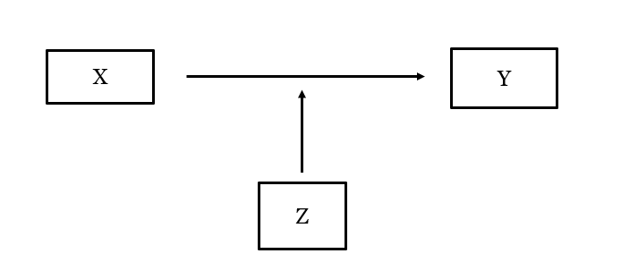

#Packages
library(sjPlot) #Dataset overzicht
library(rio) #laden van data
library(tidyverse) #datamanipulatie en grafieken
library(modelsummary) #regressietabellen maken
#Data
anes <- import("data/anes_interactions.rda")15 Interacties in het Regressiemodel
In vorige hoofdstukken hebben we regressiemodellen geschat waarbij een afhankelijke variabele voorspeld werd door 1 of meer onafhankelijke variabelen. In dit hoofdstuk kijken we naar interacties tussen onafhankelijke variabelen: hangt het effect van 1 predictor af van waarden van de andere predictor? We laden eerst de packages en dataset waar we mee gaan werken.
De dataset die we voor dit overzicht gebruiken bevat survey data van de 2020 American National Elections Study (ANES). Deze survey werd afgenomen net voor de presidentsverkiezingen in 2020 waarin de toenmalige president Donald Trump (Republikeinse Partij) campagne voerde voor een tweede termijn. Zijn uitdager was Joseph Biden (Democratische Partij).
De dataset is reeds “schoon”: ontbrekende gegevens werden als “NA” aangeduid en binaire/categorische variabelen zijn geconverteerd naar factor variabelen. Laten we even kijken:
view_df(anes)| ID | Name | Label | Values | Value Labels |
| 1 | trump | Evaluation of Donald Trump | range: 0-100 | |
| 2 | biden | Evaluation of Joe Biden | range: 0-100 | |
| 3 | socialists | Evaluation of Socialists | range: 0-100 | |
| 4 | right_track | Is Country Heading in Right Direction or the Wrong Track |
Wrong Track Right Direction |
|
| 5 | vote2016 | Vote Choice in 2016 Pres Election | Clinton Vote Trump Vote |
|
| 6 | pid | Party Identification | 1 2 3 4 5 6 7 |
Strong Democrat Not Strong Democrat Lean Democrat Independent Lean Republican Not Strong Republican Strong Republican |
| 7 | age | Age in years | range: 18-80 | |
| 8 | rural_urban | Type of Area Respondent Lives In | Suburb Rural Small Town City |
|
15.1 Een interactie in het regressiemodel
Zowel bij lineaire (lm) als logistische (glm) regressie kunnen we meerdere onafhankelijke variabelen toevoegen door gebruik te maken van het ‘+’ teken. We kunnen een interactie tussen twee onafhankelijke variabelen toevoegen door het ‘*’ teken in plaats van de ‘+’ te gebruiken.
In het volgende lineaire regressiemodel voorspellen we hoe respondenten kandidaat en uitdager Joe Biden evalueren op een schaal van 0 (‘heel koud of ongunstig’) tot 100 (‘heel warm of gunstig’) door gebruik te maken van 3 predictors:
pid: ‘partisan identity’ of partij-identificatie, een continue variabele die loopt van 1 ‘Overtuigd Democraat’ tot 7 ‘Overtuigd Republikein’;
right_track: een binaire, factor variabele waarbij ‘0’ betekent dat een respondent vindt dat het de verkeerde richting uitgaat met het land en ‘1’ dat het de goede richting uitgaat met het land;
rural_urban: een categorische variabele die aangeeft in welk soort locatie een respondent woont, met ‘suburb’ als referentiecategorie.
#Model schatten en resultaten opslaan
biden_model <- lm(biden ~ pid + right_track + rural_urban, data = anes)
#Overzicht resultaten
summary(biden_model)
Call:
lm(formula = biden ~ pid + right_track + rural_urban, data = anes)
Residuals:
Min 1Q Median 3Q Max
-83.656 -13.349 0.771 16.344 90.722
Coefficients:
Estimate Std. Error t value Pr(>|t|)
(Intercept) 93.9170 0.6543 143.537 < 2e-16 ***
pid -10.2606 0.1364 -75.245 < 2e-16 ***
right_trackRight Direction -12.8153 0.6993 -18.326 < 2e-16 ***
rural_urbanRural -4.1666 0.8219 -5.070 4.09e-07 ***
rural_urbanSmall Town -2.9846 0.7011 -4.257 2.10e-05 ***
rural_urbanCity -0.3076 0.6713 -0.458 0.647
---
Signif. codes: 0 '***' 0.001 '**' 0.01 '*' 0.05 '.' 0.1 ' ' 1
Residual standard error: 21.88 on 7141 degrees of freedom
(1133 observations deleted due to missingness)
Multiple R-squared: 0.602, Adjusted R-squared: 0.6018
F-statistic: 2161 on 5 and 7141 DF, p-value: < 2.2e-16Biden wordt minder positief ingeschat als partij-identificatie meer richting Republikeinen gaat en als respondenten vinden dat het de goede richting uitgaat met het land (onder Trump). Er zijn ook verschillen voor locatie. 1
Stel dat we op basis van theorie denken dat er een interactie is tussen partij-identificatie en de evaluatie dat het land in de goede/slechte richting gaat. We kunnen denken dat het effect van pid op de evaluatie van Biden anders is als men vindt dat het land in de slechte richting in plaats van de goede richting beweegt. Of we denken dat het effect van right_track anders is voor (overtuigde) Democraten en Republikeinen. Beide hypotheses onderzoeken we door dezelfde interactieterm toe te voegen aan het model. We verbinden hiervoor 2 onafhankelijke variabelen met een (‘*’) in plaats van een (‘+’) teken.
#Model schatten en resultaten opslaan
biden_int <- lm(biden ~ pid * right_track + rural_urban, data = anes)
#Overzicht resultaten
summary(biden_int)
Call:
lm(formula = biden ~ pid * right_track + rural_urban, data = anes)
Residuals:
Min 1Q Median 3Q Max
-84.834 -13.186 0.166 15.166 87.299
Coefficients:
Estimate Std. Error t value Pr(>|t|)
(Intercept) 95.6585 0.6730 142.146 < 2e-16 ***
pid -10.8243 0.1468 -73.744 < 2e-16 ***
right_trackRight Direction -33.1885 2.1600 -15.365 < 2e-16 ***
rural_urbanRural -4.0838 0.8163 -5.003 5.79e-07 ***
rural_urbanSmall Town -2.8082 0.6965 -4.032 5.60e-05 ***
rural_urbanCity -0.3202 0.6667 -0.480 0.631
pid:right_trackRight Direction 3.7144 0.3729 9.961 < 2e-16 ***
---
Signif. codes: 0 '***' 0.001 '**' 0.01 '*' 0.05 '.' 0.1 ' ' 1
Residual standard error: 21.73 on 7140 degrees of freedom
(1133 observations deleted due to missingness)
Multiple R-squared: 0.6075, Adjusted R-squared: 0.6072
F-statistic: 1842 on 6 and 7140 DF, p-value: < 2.2e-16
Output uitleg
De structuur van de output is dezelfde als bij lineaire regressiemodellen zonder interactie, behalve dat een nieuwe term werd toegevoegd: pid:right_trackRight Direction.
Wanneer we 2 predictoren verbinden met het ‘*’ teken, voegt R de beide variabelen toe en daarnaast ook de interactieterm, oftewel de vermenigvuldiging van de variabelen. De naam die we terugvinden voor de interactieterm voegt de 2 predictoren samen met een dubbelpunt (pid:right_trackRight Direction).
Voor een logistisch model wordt hetzelfde principe gevolgd. Hier voorspellen we of een persoon vindt dat de VS de goede (1) of verkeerde (0) richting uitgaat met de variabele right_track. We gebruiken de volgende predictoren: vote2016, voor wie gestemd werd in 2016 (Hillary Clinton = 0, Donald Trump = 1); age, leeftijd in jaren; en rural_urban, locatie. We voegen een interactie toe tussen vote2016 en age in dit voorbeeld.
#Model schatten en resultaten opslaan
righttrack_int <- glm(right_track ~ vote2016 * age + rural_urban,
family = "binomial", data = anes)
#Overzicht resultaten
summary(righttrack_int)
Call:
glm(formula = right_track ~ vote2016 * age + rural_urban, family = "binomial",
data = anes)
Coefficients:
Estimate Std. Error z value Pr(>|z|)
(Intercept) -2.952141 0.344679 -8.565 < 2e-16 ***
vote2016Trump Vote 2.820292 0.373350 7.554 4.22e-14 ***
age -0.009465 0.006296 -1.503 0.1328
rural_urbanRural 0.208129 0.111289 1.870 0.0615 .
rural_urbanSmall Town 0.110962 0.101173 1.097 0.2727
rural_urbanCity 0.160473 0.110704 1.450 0.1472
vote2016Trump Vote:age 0.012914 0.006823 1.893 0.0584 .
---
Signif. codes: 0 '***' 0.001 '**' 0.01 '*' 0.05 '.' 0.1 ' ' 1
(Dispersion parameter for binomial family taken to be 1)
Null deviance: 5929.4 on 5132 degrees of freedom
Residual deviance: 4033.5 on 5126 degrees of freedom
(3147 observations deleted due to missingness)
AIC: 4047.5
Number of Fisher Scoring iterations: 6::: callout-warning #### Interpretatie
Wanneer we een interactie testen, vragen we ons eigenlijk af of het effect van een bepaalde predictor (X) op de afhankelijke variable (Y) anders is wanneer een tweede predictor (Z) andere waarden aanneemt.

De coëfficiënt van de interactie vertelt ons of dit het geval is. In het lineaire “biden_int” model, bijvoorbeeld, vinden we dat de coëfficiënt statistisch significant is: de relatie tussen partij-identificatie en hoe een respondent Biden evalueert, hangt af van de opinie van de respondent over de richting dat het land uitgaat.2 De interactievariabele in het logistische “righttrack_int” model is echter niet statistisch significant (we gebruiken hier een standaard 95% betrouwbaarheidsniveau). Dit betekent dat bijvoorbeeld de relatie tussen leeftijd en opinie over het land hetzelfde is ongeacht of respondenten in 2016 op Clinton of Trump hebben gestemd.
Om interactietermen beter te begrijpen, kunnen we R gebruiken om:
- Het marginale effect van 1 onafhankelijke variabele (X) op Y te berekenen bij verschillende waarden van de andere onafhankelijke (Z) (Hoofdstuk 16).
- De voorspelde waarden voor Y te berekenen voor verschillende combinaties van waarden van de 2 onafhankelijke variabelen (Hoofdstuk 17).
15.2 Regressietabellen
In de volgende 2 hoofdstukken gaan we dieper in op hoe je interactie-effecten best kan begrijpen en communiceren met plot. Hier lichten we kort toe hoe ze te presenteren in regressietabellen. We maken hiervoor weer gebruik van de modelsummary() functie uit het modelsummary package. De basisprincipes zijn dezelfde als degene die we bespraken in eerdere hoofdstukken (lineaire regressietabellen: Paragraaf 8.5; logistische regressietabellen: Paragraaf 14.2).
We zullen de resultaten van het model zonder en het model met interactie naast elkaar presenteren. Zo ziet de lezer onmiddellijk het verschil tussen beide modellen.
# Lijst van modellen
interaction_lm_models <- list(
biden_model, biden_int
)
#Tabel maken
modelsummary(interaction_lm_models,
stars = T,
coef_rename = c(
"(Intercept)" = "Constante",
"pid" = "Partij-Identificatie (PID)",
"right_trackRight Direction" = "Land gaat in de goede richting",
"rural_urbanCity" = "Stad (Ref. Stedelijke buitenwijk)",
"rural_urbanRural" = "Landelijk gebied (Ref. Stedelijke buitenwijk)",
"rural_urbanSmall Town" = "Kleine stad (Ref. Stedelijke buitenwijk)",
"pid:right_trackRight Direction" = "PID x Juiste Richting"),
gof_map = c("nobs", "r.squared", "adj.r.squared"),
title = "Evaluatie van kandidaat Biden",
notes = "OLS coëfficiënten met standaardfouten tussen haakjes")- 1
- Lijst van modellen om te gebruiken in de tabel
- 2
- Toevoegen van stersymbolen voor statistische significantie
- 3
-
Duidelijke namen geven aan variabelen
coef_rename() - 4
-
Model fit statistieken selecteren
gof_map() - 5
-
Informatieve titel met
title = - 6
-
Duidelijke notitie over wat we precies weergeven in de tabel
notes =
| (1) | (2) | |
|---|---|---|
| + p < 0.1, * p < 0.05, ** p < 0.01, *** p < 0.001 | ||
| OLS coëfficiënten met standaardfouten tussen haakjes | ||
| Constante | 93.917*** | 95.659*** |
| (0.654) | (0.673) | |
| Partij-Identificatie (PID) | -10.261*** | -10.824*** |
| (0.136) | (0.147) | |
| Land gaat in de goede richting | -12.815*** | -33.188*** |
| (0.699) | (2.160) | |
| Landelijk gebied (Ref. Stedelijke buitenwijk) | -4.167*** | -4.084*** |
| (0.822) | (0.816) | |
| Kleine stad (Ref. Stedelijke buitenwijk) | -2.985*** | -2.808*** |
| (0.701) | (0.697) | |
| Stad (Ref. Stedelijke buitenwijk) | -0.308 | -0.320 |
| (0.671) | (0.667) | |
| PID x Juiste Richting | 3.714*** | |
| (0.373) | ||
| Num.Obs. | 7147 | 7147 |
| R2 | 0.602 | 0.607 |
| R2 Adj. | 0.602 | 0.607 |
Wat we hier nog zouden willen veranderen is de interactieterm dichter bij de hoofdvariabelen van de interactie zetten in plaats van standaard onderaan de tabel. Dit kunnen we door i.p.v. coef_rename gebruik te maken van coef_map. Zo kunnen we ook de volgorde van de variabelen bepalen.
modelsummary(interaction_lm_models,
stars = T,
coef_map = c(
"(Intercept)" = "Constante",
"pid" = "Partij-Identificatie (PID)",
"right_trackRight Direction" = "Land gaat in de goede richting",
"pid:right_trackRight Direction" = "PID x Juiste Richting",
"rural_urbanCity" = "Stad (Ref. Stedelijke buitenwijk)",
"rural_urbanRural" = "Landelijk gebied (Ref. Stedelijke buitenwijk)",
"rural_urbanSmall Town" = "Kleine stad (Ref. Stedelijke buitenwijk)"),
gof_map = c("nobs", "r.squared", "adj.r.squared"),
title = "Evaluatie van kandidaat Biden", #
notes = "OLS coëfficiënten met standaardfouten tussen haakjes") - 1
-
Verander
coef_renamenaarcoef_map - 2
- Interactieterm dichter bij hoofdvariabelen.
| (1) | (2) | |
|---|---|---|
| + p < 0.1, * p < 0.05, ** p < 0.01, *** p < 0.001 | ||
| OLS coëfficiënten met standaardfouten tussen haakjes | ||
| Constante | 93.917*** | 95.659*** |
| (0.654) | (0.673) | |
| Partij-Identificatie (PID) | -10.261*** | -10.824*** |
| (0.136) | (0.147) | |
| Land gaat in de goede richting | -12.815*** | -33.188*** |
| (0.699) | (2.160) | |
| PID x Juiste Richting | 3.714*** | |
| (0.373) | ||
| Stad (Ref. Stedelijke buitenwijk) | -0.308 | -0.320 |
| (0.671) | (0.667) | |
| Landelijk gebied (Ref. Stedelijke buitenwijk) | -4.167*** | -4.084*** |
| (0.822) | (0.816) | |
| Kleine stad (Ref. Stedelijke buitenwijk) | -2.985*** | -2.808*** |
| (0.701) | (0.697) | |
| Num.Obs. | 7147 | 7147 |
| R2 | 0.602 | 0.607 |
| R2 Adj. | 0.602 | 0.607 |
Met deze syntax zetten we de interactieterm net onder de twee variabelen waaruit de interactie bestaat (pid en right_track).
Waarschuwing!
coef_map is handig maar is gevoelig aan het juist typen van de variabelenamen. Waar coef_rename bij een typfout gewoon de oude naam geeft, doet coef_map de variabele in z’n geheel verdwijnen. Laten we bij wijze van voorbeeld 2 typfouten maken. We schrijven “right_trackRight direction” i.p.v. “right_trackRight Direction” en “rural_urbancity” i.p.v. “rural_urbanCity”:
modelsummary(interaction_lm_models,
stars = T,
coef_map = c(
"(Intercept)" = "Constante",
"pid" = "Partij-Identificatie (PID)",
"right_trackRight direction" = "Land gaat in de goede richting",
"pid:right_trackRight Direction" = "PID x Juiste Richting",
"rural_urbancity" = "Stad (Ref. Stedelijke buitenwijk)",
"rural_urbanRural" = "Landelijk gebied (Ref. Stedelijke buitenwijk)",
"rural_urbanSmall Town" = "Kleine stad (Ref. Stedelijke buitenwijk)"),
gof_map = c("nobs", "r.squared", "adj.r.squared"),
title = "Evaluatie van kandidaat Biden", #
notes = "OLS coëfficiënten met standaardfouten tussen haakjes") - 1
- Direction naar direction
- 2
- City naar city
| (1) | (2) | |
|---|---|---|
| + p < 0.1, * p < 0.05, ** p < 0.01, *** p < 0.001 | ||
| OLS coëfficiënten met standaardfouten tussen haakjes | ||
| Constante | 93.917*** | 95.659*** |
| (0.654) | (0.673) | |
| Partij-Identificatie (PID) | -10.261*** | -10.824*** |
| (0.136) | (0.147) | |
| PID x Juiste Richting | 3.714*** | |
| (0.373) | ||
| Landelijk gebied (Ref. Stedelijke buitenwijk) | -4.167*** | -4.084*** |
| (0.822) | (0.816) | |
| Kleine stad (Ref. Stedelijke buitenwijk) | -2.985*** | -2.808*** |
| (0.701) | (0.697) | |
| Num.Obs. | 7147 | 7147 |
| R2 | 0.602 | 0.607 |
| R2 Adj. | 0.602 | 0.607 |
De coëfficiënten voor deze variabelen zijn nu verdwenen uit de tabel. Je krijgt geen waarschuwing dus moet je extra opletten. Meer info over coef_map vind je op de modelsummary website.
De dataset bevat ook een variabele voor hoe respondenten Donald Trump evalueren (also has a measure of evaluations of Donald Trump (the variable named (
trump). Mensen die vinden dat het land de slechte richting op gaat zijn negatiever voor Trump dan mensen die vinden dat het land de goede richting uitgaat.↩︎Interacties zijn symmetrisch, dus we kunnen ook stellen dat het effect van ‘right_track’ op Biden score verschilt naarmate respondenten een andere patij-identificatie hebben. Welke variabele als hoofdvariabele (X) en welke als moderator (Z) wordt beschouwd is aan de onderzoeker.↩︎